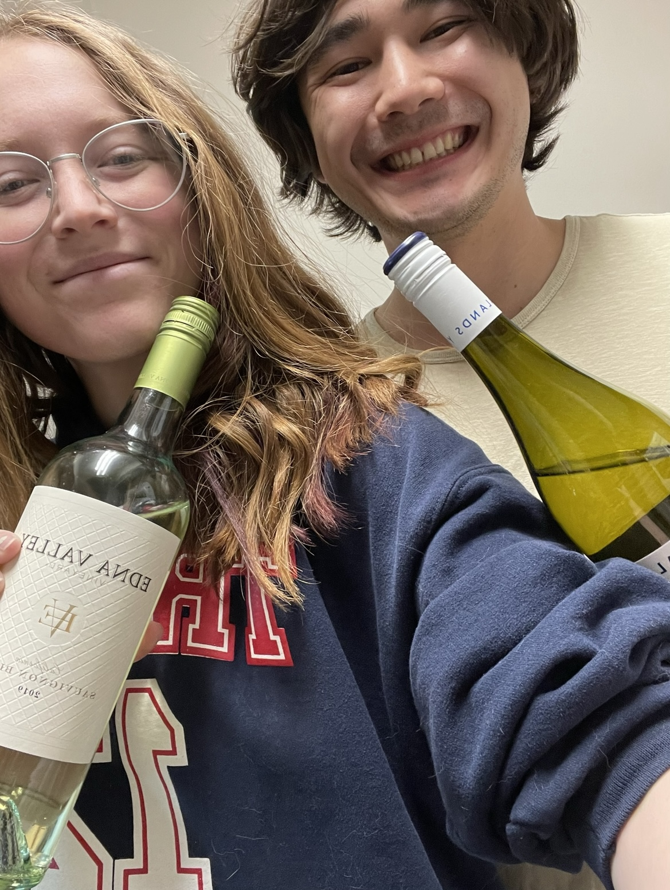

Sauvignon Blanc
What is it??
Description will go here
But there are two wines in the picture!!
Yes! There were so many options to choose from, so we decided to each choose one. Ryan chose the Yealands. This wine was from the Marlborough region in New Zealand, which is the largest wine-growing region in the country.
Molly chose the Edna Valley Sauvignon Blanc. This wine is produced in California.
The wine book suggested that we have this wine with Asian foods or other spicy dishes. We made vegetarian coconut curry stir fry, which seemed to complement the dry acidity pretty well.
Edna Valley
Molly's Rating and Tasting Notes
7.5. There's some green apple on the nose, relatively dry but not detrimentally so. I can kind of taste the buttery notes as well as the peach. Overall, a pleasant white wine.
Ryan's Rating and Tasting Notes
7.7. On the nose I'm picking up lime, grass, orange, and jalapeño. In the mouth, it is light and delicate. There is some acidity, but not enough to make the mouth water, let alone pucker. Green apple dominates the conversation but there are whispers of tea and lemongrass filling in the empty space. Overall, I think this is an easy wine to drink, and I could see myself coming back this to on a warm summer evening.
Yealands
Molly's Rating and Tasting Notes
7.2. This wine smells kind of like peach, and there is lots of tropical essence in the smell and taste. Probably a no if given a choice of the other Sauvignon Blanc we had, but it's definitely not awful.
Ryan's Rating and Tasting Notes
8.2. On the nose, very peachy and tropical. I'm picking up some floral notes. On the tongue it is sweet and smooth. A tad acidic, but the sweetness more than compensates. I'm getting strong tastes of passionfruit with weaker pleas of peach and guava. I'm not sure if it's the curry we just ate, but I'm picking up bone marrow and minerality. Overall, a slightly acidic but sweet tropical wine. Would recommend.
References
[1] J. Robinson, J. Harding and J. Vouillamoz. Wine Grapes - A complete guide to 1,368 vine varieties, including their origins and flavours. 2012.
[2] Madeline Puckette and Justin Hammack. Wine Folly: The Master Guide. Avery - A Penguin Imprint, New York, NY, 2018.
[3] Sauvignon Blanc. https://winefolly.com/grapes/sauvignon-blanc/ Wine Folly. Accessed March 2023.
Suggestion of what we should try next?
Let us know via the comment box below!